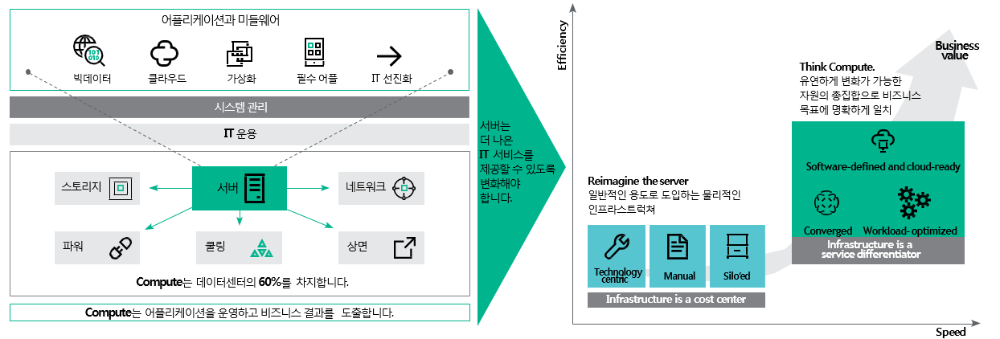
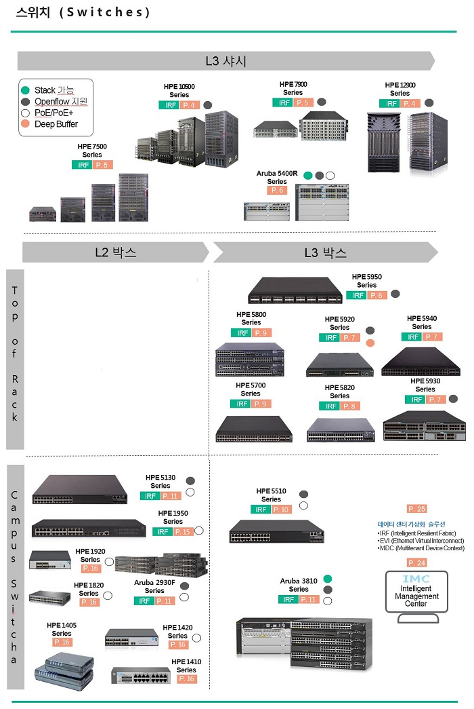
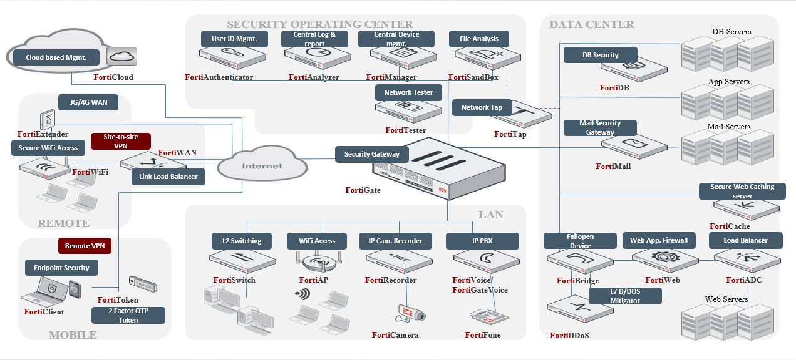

DK유엔씨는 HPE 총판으로 고객사에 수준높은 IT인프라 환경을 제공합니다.
HPE CI(Converged Infrastracture)는 아키텍처를 기반으로 고객사에 수준 높은 IT 인프라 환경을 제안합니다. DK유엔씨는 미션 크리티컬 고객사에 안정성, 신뢰성, 가용성을 보장하면서 기존 데이터센터의 고비용 구조를 저비용으로 전환할 수 있도록 지원합니다. HPE Server HPE CI(Converged Infrastracture) 아키텍처를 기반으로 고객사에 수준 높은 IT 인프라 환경을 제안합니다. DK유엔씨는 미션 크리티컬 고객사에 안정성, 신뢰성, 가용성을 보장하면서 기존 데이터센터의 고비용 구조를 저비용으로 전환할 수 있도록 지원합니다. 데이터센터의 60% 파워와 40%의 쿨링 비용이 Compute를 위해 사용됩니다. Compute를 위한 서버는 데이터센터 상면의 60%를 차지하며, 나머지 40%가 스토리지와 네트워크를 차지합니다. Compute는 데이터센터의 핵심이며, 서버는 Compute를 위한 핵심 요소입니다. IT는 비즈니스의 가치를 보다 빠르고 효과적으로 전달할 수 있도록 변화해야 합니다. 일반적으로 서버는 기술중심적이고, 엔지니어의 수작업에 의해 개별적으로 운영되어 왔습니다. 새로운 Compute 시대에는 인프라가 기업의 비스를 차별화 할 수 있는 중요한 부분이라는 점을 인식해야 합니다.
HPE ARUBA 네트워크에 특화된 엔지니어를 통해 수준 높은 IT인프라 환경을 제공합니다.
DK유엔씨는 무선 AP, Controller부터 유선 엔터프라이즈 급 백본 스위치까지 다양한 Demo장비 포트폴리오를 구축하여 고객환경에 맞는 안정적인 네트워크 인프라 구현 및 서비스를 원스톱으로 제공하고 있습니다.
최고의 기술력으로 기업 및 데이터센터의 네트워크 보안 어플라이언스를 제공합니다.
DK유엔씨는 Fortinet과 고객의 환경을 고려한 End-to-End 전문 보안 인프라 아키텍처를바탕으로 완벽한 통합 보안 인프라를 구축하여 지능적인 보안 위협을 선제적으로 방어 / 지원 함을 약속 드립니다.
